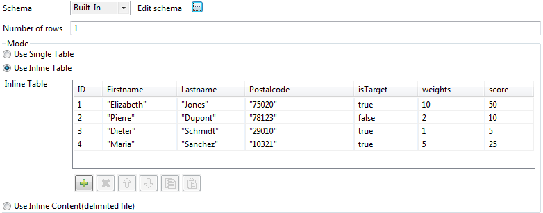
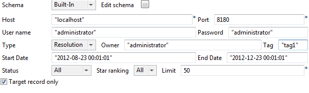

Warning
This component is available in the Palette of the studio but you will only be able to use it on the condition that you have subscribed to Talend Platform for MDM, Talend Platform for MDM with Big Data, or Talend Platform Universal.
|
Component family |
Talend MDM | |
|
Function |
tStewardshipTaskDelete deletes data sets stored in the stewardship console database in the form of tasks, either matching certain search criteria or without any search criteria. NoteIn order to better understand the purpose of this component, consult the Talend Data Stewardship Console User Guide. | |
|
Purpose |
This component helps streamline processes by removing tasks that are no longer used or relevant. | |
|
Basic settings |
Host |
Server IP address of the stewardship console database. |
|
|
Port |
The listening port number of the database server. |
|
|
User name and Password |
Type in the authentication information to the MDM server. |
|
|
Type |
Select the type of the tasks you want to delete: Resolution: data resolution tasks represent the results of the data matching processes done on data across heterogeneous sources. Data: data integrity tasks are the results of the data integrity processes done on data. For further information on task types and task management, see Talend Data Stewardship Console User Guide. |
|
|
Owner |
If required, type in the name of the task owner. This will filter the tasks according to the task owner. |
|
|
Tag |
If required, type in the name of the tag category associated with the tasks you want to delete. For further information, see Talend Data Stewardship Console User Guide. |
|
|
Start Date/End Date |
If required, set a task creation date range within which you want to delete the
tasks. Use the following format: |
|
|
Status |
If required, select from the list the task status you want to use to filter the retrieved tasks. |
|
|
Delete when Star ranking is equal to or less than |
If required, select the number of stars, 0 through 5, assigned to the tasks as a numerical rating to highlight importance. This will delete tasks up to a certain level of importance only. |
|
|
Limit |
If required, set the maximum number of tasks to be deleted. If Limit = 0, this means there is no limit to the number of tasks deleted. |
|
Advanced settings |
tStatCatcher Statistics |
Select this check box to gather the processing metadata at the Job level as well as at each component level. |
This scenario describes a multi-component Job that deletes data sets stored in the Data Stewardship Console database in the form of tasks, if these tasks match certain criteria. The first part of the scenario creates some sample data and data stewardship tasks, and the second part deletes tasks which are not used.

Procedure 21.7. Creating sample stewardship tasks
The first part of this scenario creates the sample data and data stewardship tasks.
Drop a tFixedFlowInput component from the Palette onto the workspace, and rename it SampleData.
In the Component view of tFixedFlowInput component called SampleData, click the Edit schema button. In the schema that opens, create the columns shown below and set the appropriate Type for each column.

Select Use Inline Table and enter some data in each of the columns, as in the example below.
Drop a tStewardshipTaskOutput component onto the workspace, and rename it CreateStewardshipTasks.
The tStewardshipTaskOutput component creates tasks in the Talend Data Stewardship Console database and lists these tasks in the Data Stewardship Console.
Connect the tFixedFlowInput component called SampleData to the tStewardshipTaskOutput component called CreateStewardshipTasks using a Row Main link.
In the Component view of tStewardshipTaskOutput component called CreateStewardshipTasks, in the Basic settings tab, provide the connection information (Host, Port, User name and Password) for the Data Stewardship Console to which you want to connect, and the information about the tasks you want to create, as shown in the following example.

Run your Job and then open the Data Stewardship Console to check that your tasks have been created.
Procedure 21.8. Deleting unused tasks
The second part of this scenario lets you delete those tasks which are no longer used.
Drop a tStewardshipTaskInput component from the Palette onto the workspace. Connect the tFixedFlowInput component called SampleData to the tStewardshipTaskInput component using an OnSubjobOk trigger.
In the tStewardshipTaskInput_1 component, in the Basic settings tab, provide the connection information (Host, Port, User name and Password) for the Data Stewardship Console to which you want to connect, and information about the tasks you want to use as input (Owner, Tag, Start Date and End Date).
For this scenario, make sure you specify the Tag as tag1.
Drop a tLogRow component from the Palette onto the workspace. Connect the tStewardshipTaskInput_1 component to the new tLogRow component using a Row Main link.
The tLogRow component is used to monitor data processed.
Drop a tStewardshipTaskDelete component from the Palette onto the workspace. Connect the tStewardshipTaskDelete component to the tStewardshipTaskInput_1 component using an OnSubjobOk trigger.
The tStewardshipTaskDelete component helps streamline processes by removing tasks that are no longer used or relevant when they match certain criteria.
In the tStewardshipTaskDelete component, in the Basic settings tab, provide the connection information (Host, Port, User name and Password) for the Data Stewardship Console to which you want to connect.
In the Task Configuration area of the Basic settings tab of the tStewardshipTaskDelete component, enter the criteria to use when deciding which tasks to delete. An example is shown in the image below.

Drop a tJava component from the Palette onto the workspace. Connect the tStewardshipTaskDelete component to the tJava component using an OnSubjOk trigger.
The tJava component makes it possible to extend the functionalities of a Talend Job through using Java commands. In this case, it shows you which tasks are deleted.
In the Basic settings tab of the tJava component, enter the following code:
System.out.println("---------------:"+((Integer)globalMap.get("tStewardshipTaskDelete_1_DELETED_TASK_NUMBER")));Press F6 to run your Job and refresh or reopen the Data Stewardship Console to check that your tasks have been deleted.